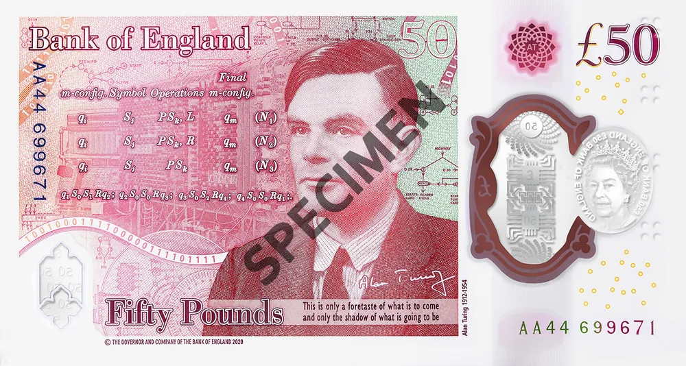
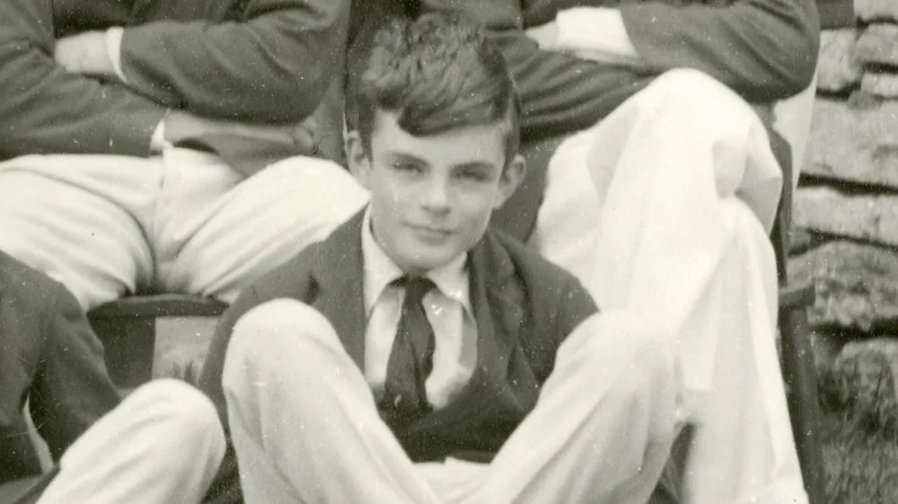

AlanTuring

Real Name | Alan Mathison Turing |
|---|---|
birth |
June 23, 1912 |
United Kingdom of Great Britain and Ireland, London, Westminster, Maida Vale |
|
death |
June 7, 1954 (he was 41 years old) |
Whimslow, Cheshire, England |
|
Nationality |
United Kingdom |
Occupation |
a computer scientist |
-
Overview
AlanTuring, carved on £50 in England
English mathematician and computer scientist. He graduated from King's College at Cambridge University and taught at the same university. He is considered the father of computer science and the founder of modern computer science. When World War II broke out, he took charge of the Nazi German Enigma code-breaking at the request of the government to contribute to the victory of the Allied Powers, shortening the duration of the World War and saving approximately 14 million people.
After the end of the war, he returned to the private sector, but in 1952, he was arrested on charges of homosexuality, which was treated illegally in Britain at the time, and was found dead at his home two years later in 1954. The cause of death was cyanide poisoning, and it was presumed to be suicide, but the bereaved family and some historians insisted on the accident.
Since then, as LGBTQ human rights have surfaced and misconceptions have begun to change, talk of amnesty for Turing began to emerge. On December 24, 2013, Queen Elizabeth II was granted special pardons by the authority of the monarch at the request of the Minister of Justice, and was completely reinstated when the acquittal was declared unconstitutional in a legal provision that entwined him under the pretext of his sexual orientation. It was 59 years after his death.
-
In life
2-1. Childhood
When he was a child, he boasted a clear brain by learning to read in three weeks and solving calculus-deepening problems on his own without learning calculus from someone. At the age of 16, his school math teacher told Turing's mother,
"There's nothing more to teach, so study on your own."
15-year-old Alan
At the age of 16, he met his first love, a friend named Christopher Morcom, and was greatly influenced. Morcom was also a gifted student who had been said to have entered Cambridge University as a scholarship student if she had not died early, and they both liked to solve difficult math problems together. However, when Morcombe died of mycobacterium bacteremia in 1930, he devised a computational theory while thinking about how to store the intelligence that's in Morcombe's brain or deliver it to others.
-
2-2. youth
Turing passed the first entrance examination at Cambridge University, a prestigious university in England. However, because he couldn't get a scholarship, Turing retake the examination and enter as a scholarship student. While attending King's College at Cambridge University, he has already published a groundbreaking paper called On Computable Numbers, with an Application to the Entscheidung problem (1936). This is famous for presenting the theoretical basis for Turing machine theory and Neumann computers.
The Turing machine is a concept about the feasibility of computers and was first used in the study of the possibility of proving propositions. Like Russell's paradox and incompleteness theorem, Turing proved the proposition 'I cannot be proved by finite number of logical processes'. In the middle, Turing proves that if there is a long strip of paper divided into compartments and the ability to set the result of reading and replacing data on it, it is the same as mathematical proof and human intelligence.
Turing went to the United States to study after completing his master's degree in mathematics at Cambridge University, where he earned his doctorate in mathematics at Princeton University. At this time, he became acquainted with Turing Chochurch and John von Neumann of mathematical logic, both of whom were professors at Princeton. Neumann, who was 9 years older than Turing, interacted with him and noticed his talent, and while he was also aware of Turing's sexual orientation, he remained close. Neumann advised Turing to stay in the United States rather than return to England, where homosexuality is classified as a crime, when Turing's doctoral degree was completed. Neumann offered Turing his teaching position, but Turing, a young man who was full of patriotism at the time, refused it and chose to return to England with his devotion to his country.
-
2-3. During World War II
After returning home, Turing joined the British decryption agency GC&CS in 1939 and was in charge of Session Hut 8 to decrypt the Nazi German army. During his transfer as the director, he developed Turing Bombe, and it was at this point that he decrypted the infamous Enigma. Of course, he traveled from GC&CS to the United States, where he developed a relationship with Claude Shannon.